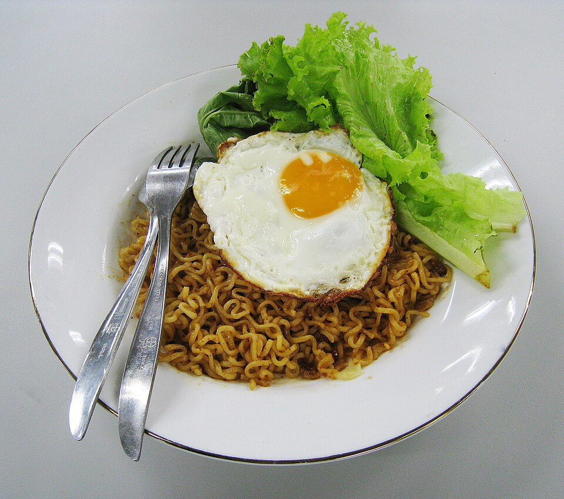

~7 min runtime
Indomie Goreng: an engineer's spec
Mi goreng, written for people who read the docs before they cook. Fully specified, lightly tested, endlessly forked.

Reference output: Indomie mi goreng with telur ceplok. Photo by Gunawan Kartapranata, CC BY-SA 3.0 via Wikimedia Commons. Your output may vary.

Dependencies
Indomie Mi Goreng, 1 pack (85 g)The core runtime. Other brands are forks; behaviour is not guaranteed.
required
required
Water, 400 mlFor the boil phase. Filtered is a nice-to-have, not a dependency.
required
required
Seasoning packets, 5 of 5Bundled with the pack. Kecap manis is not optional; do not uninstall.
bundled
bundled
Egg, 1 unitBuild flag WITH_TELUR. The classic. Sunny side up is the stable release.
optional
optional
Sosis, 1 to 2 unitsBuild flag WITH_SOSIS. Slice on the bias for maximum surface area.
optional
optional
Cabe rawit or chili sauceRuntime parameter LEVEL_PEDAS. Defaults to 2. See Configuration.
to taste
to taste
Configuration
Set the flags. The build summary updates as you go.
- Estimated runtime
- Critical path
- Output
- 1 serving, hot. Not cacheable.
The algorithm
- Bring 400 ml of water to a rolling boil. Do not add noodles early; a cold start introduces sogginess.
- Insert the noodle block. Boil exactly 3 minutes. This is the timing-critical section.
- Parallel thread: open all five seasoning packets into the serving bowl. Mixing happens in the bowl, never in the pot.
- If WITH_TELUR: fry the egg in a separate pan now. Parallelizable with step 2.
- Drain the noodles completely. Residual water is the leading cause of sauce-dilution bugs.
- Transfer to the bowl and toss with conviction until every strand is coated. Under-tossing causes clumpy sauce; see Failure modes.
- Plate, garnish with egg, sosis and extra fried shallots as configured. Serve immediately; this build does not idle well.
Pseudocode
function cookIndomie(config = {}) {
const { telur = true, sosis = false,
pedas = 2 } = config;
const water = boil(400); // ml
add(PACK.noodles, water);
if (telur) spawn(fryEgg); // side thread
if (sosis) spawn(frySosis); // side thread
await sleep(min(3)); // hard SLA
drain(noodles); // fully
const sauce = unpack(PACK
.seasoning.all); // 5 of 5
return toss(noodles, sauce)
.garnish([shallots, egg, sosis])
.serve(HOT); // no cache
}
State diagram
PANTRY→
BOILING→
DRAINED→
SAUCED→
PLATED→
CONSUMED
Terminal state is CONSUMED. There is no rollback.
Failure modes
Soggy noodlesRoot cause: boil ran past 3 minutes. Fix: set a timer; the SLA is hard.
Clumpy sauceRoot cause: insufficient tossing or wet noodles. Fix: drain fully, toss like you mean it.
Bland outputRoot cause: partial seasoning install. Fix: all five packets, every run. No cherry-picking.
Broken yolkRoot cause: egg flipped under load. Fix: sunny side up is stable; flipping is experimental.
Cold buildRoot cause: plated, then abandoned for a phone. Fix: consume on completion. No hot standby.
Performance notes
- Total runtime
- ~7 min end to end
- Critical path
- Boil 3 min → drain → toss
- Parallelizable
- Seasoning unpack, egg and sosis fry
- Throughput
- 1 serving per run; scale by packs, not time
- Resource usage
- 1 pot, 1 bowl, optional 1 pan
- Memory footprint
- One kitchen counter